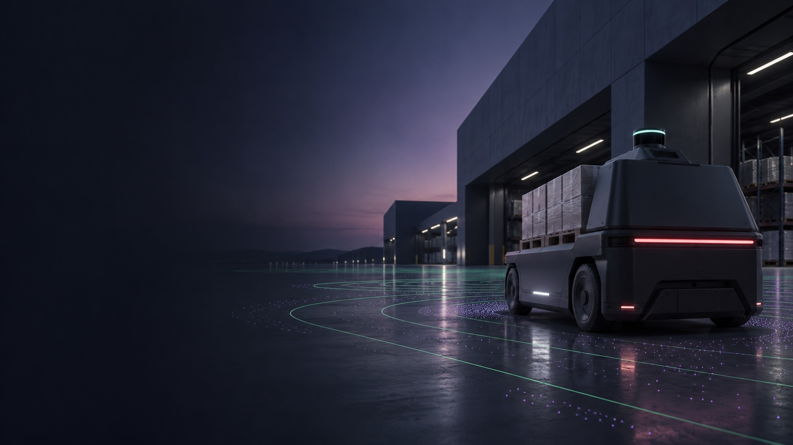

기술 노트
라이다를 설치할 때 확인할 세 가지
시야각, 장착 높이, 표면 반사 특성에서 출발합니다.

작업 공간에 맞는 거리 측정 방식을 찾아보세요.
빛의 왕복에서 공간 정보까지
빛의 왕복 시간을 바탕으로 관측 대상과 센서 사이의 거리를 구합니다.
거리와 관측 방향을 조합해 좌표를 만들고 시간과 위치의 기준을 맞춥니다.
관측 결과를 통로, 경계, 작업 구역과 연결해 공간 변화를 살펴봅니다.
광학, 소프트웨어, 현장 적용 역할을 알아보세요.